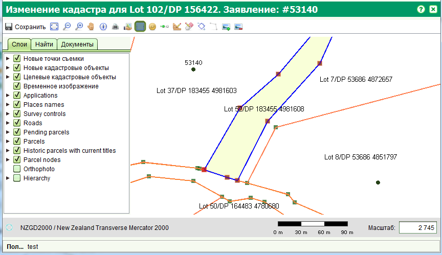
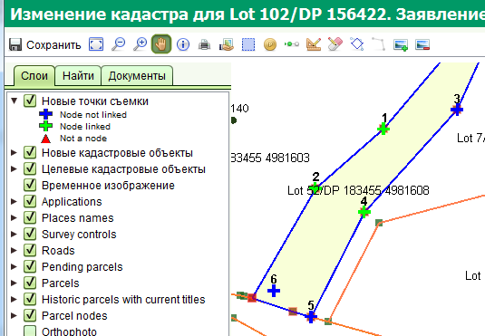

Форма изменения кадастра позволяет вам разделять и объединять земельные участки. Данная форма открывается при запуске услуги "Изменение кадастра" из заявления.
Форма изменения кадастра является расширением просмотрщика карты SOLA и содержит дополнительные инструменты при помощи которых возможно редактирование земельных участков.
Текущая функциональность изменения кадастра ограничена работой с простыми земельными участками, представленными в виде полигонов, исключая естественные границы, определяемые как набор сегментов.
Точки съемки представляют собой координаты записанные в плане съемки. Они могут быть нанесены
на карту при помощи инструмента "Создать / Изменить точки съемки"
 или путем ввода координат вручную в форме точек съемки.
Для удаления точки, выберите ее на форме точек съемки и нажмите кнопку "Удалить", расположенную над списком.
или путем ввода координат вручную в форме точек съемки.
Для удаления точки, выберите ее на форме точек съемки и нажмите кнопку "Удалить", расположенную над списком.
Форма точек съемки может быть использования для определения является ли точа граничной или нет (напр. траверсная точка). Граничная точка может быть опционально привязана к координатной точки целевого участка при помощи инструмента "Создать / Изменить точки съемки". Для этого выберите граничную точку при помощи этого инструмента и перетащите на координатную точку целевого участка. Граничная точка автоматически прилипнет к координатной точки целевого участка и знак голубого крестика поменяется на зеленый. Форма точек съемки также отображает признак привязанности, который может быть изменен в списке точек, путем снятия галочки из поля "Присоединен".

Участки, которые вы хотите изменить, могут быть выбраны при помощи инструмента "Выделить / Снять выделение целевых участков"
 и/или путем добавления соответствующего объекта недвижимости на форме заявления
на вкладке "Недвижимость и Земучатки".
Целевые участки выделяются синими границами. После того, как вы добавили и привязали необходимые точки съемки, вы можете создать новые участки
при помощи инструмента "Новый участок"
и/или путем добавления соответствующего объекта недвижимости на форме заявления
на вкладке "Недвижимость и Земучатки".
Целевые участки выделяются синими границами. После того, как вы добавили и привязали необходимые точки съемки, вы можете создать новые участки
при помощи инструмента "Новый участок"
 .
Используя данный инструмент, щелкните один раз на каждой точке съемки следуя в направлении по часовой или против часовой стрелки.
Дважды щелкните на последней токи для создания участка. Новой участок будет отображен с зеленной границей и желтой заливкой.
.
Используя данный инструмент, щелкните один раз на каждой точке съемки следуя в направлении по часовой или против часовой стрелки.
Дважды щелкните на последней токи для создания участка. Новой участок будет отображен с зеленной границей и желтой заливкой.
Для изменения идентификатора нового участка, используйте инструмент "Отобразить форму нового кадастрового объекта"
 . На форме нового кадастрового объекта вы можете изменить первую и последнюю часть идентификатора.
Вы также можете удалить участок на этой форме, если была допущена ошибка при его создании.
. На форме нового кадастрового объекта вы можете изменить первую и последнюю часть идентификатора.
Вы также можете удалить участок на этой форме, если была допущена ошибка при его создании.
Изменения сделанные в кадастре остаются временными до тех пор пока заявление с услугой изменения кадастра не будет одобрено. Вы можете одобрить заявление завершив все услуги и выполнив действие "Одобрить", доступное на панели инструментов заявления в списке "Действие по заявлению". После одобрения, новые участки будут отображаться на карте как текущие (активные).
Смотрите также: